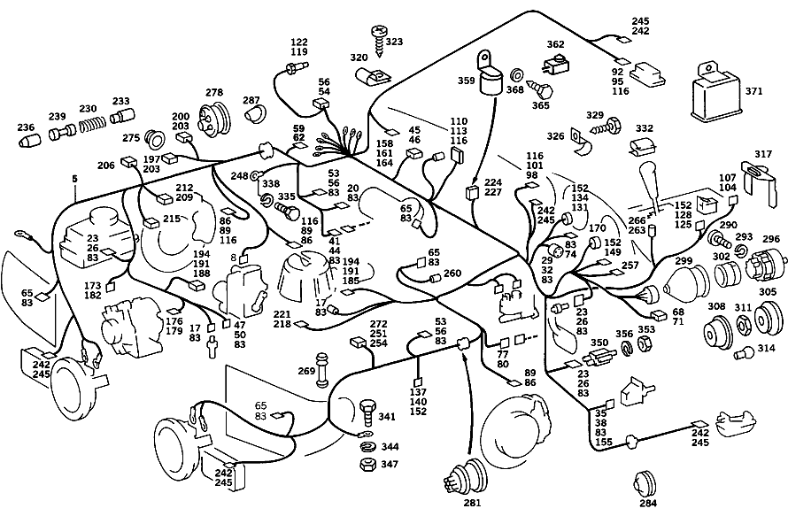

| № | Артикул | Название | Кол. | Примечание | Ограничение |
|---|---|---|---|---|---|
| 5 | A 107 540 79 05 | ЖГУТ ЭЛ.-ПРОВОДКИ | 1 | ГЛ. ЖГУТ ПРОВОДКИ [811] UP TO END OF MODEL YEAR '81 | |
| 5 | A 107 540 01 06 | ЖГУТ ЭЛ.-ПРОВОДКИ | 1 | ГЛ. ЖГУТ ПРОВОДКИ [820] FROM MODEL YEAR'82 [821] UP TO END OF MODEL YEAR'82 | |
| 5 | A 107 540 09 06 | Провод (LINE) | 1 | ГЛ. ЖГУТ ПРОВОДКИ [830] FROM MODEL YEAR'83 [841] ДО ОКОНЧ. МОДЕЛЬНОГО ГОДА 84 | |
| 5 | A 107 540 15 06 | ЖГУТ ЭЛ.-ПРОВОДКИ | 1 | ГЛ. ЖГУТ ПРОВОДКИ [850] FROM MODEL YEAR'85 | |
| 8 | A 011 545 71 28 | - Корпус штекерной втулки (RECEPTACLE HOUSING) | 1 | ЭЛ.ГИДРАВЛ.ИСПОЛН.ЭЛЕМ.,2\-КОНТАКТ.; 2\-PIN [830] FROM MODEL YEAR'83 | |
| 17 | A 011 545 85 28 | - Разъем, электрический (ELECTRIC COUPLING) | 2 | OIL\-PRESSURE\-GAUGE/TEMPERATURE\-GAUGE SENDER UNITS; 1\-PIN | |
| 17 | A 011 545 85 28 | - Разъем, электрический (ELECTRIC COUPLING) | 1 | 1\-PIN | |
| 20 | A 126 545 23 28 | - Сцепление, механическое (COUPLING, MECHANICAL) | 1 | FUEL PUMP RELAY,12\-POLE; 12\-PIN [820] FROM MODEL YEAR'82 | |
| 23 | A 002 545 49 28 | - ШТЕКЕР | - | ||
| 23 | A 008 545 37 28 | - Сцепление, механическое (COUPLING, MECHANICAL) | NB | BLINKER LAMPS,STOP LIGHT SWITCH, WINDSHIELD WASHER PUMP;BIPOLAR; 2\-PIN | |
| 26 | A 008 545 38 28 | - Верхняя часть корпуса (HOUSING UPPER PART) | NB | TO 008 545 37 28 | |
| 29 | A 009 545 73 28 | - Корпус штекерной втулки (RECEPTACLE HOUSING) | 1 | ВЫКЛ\-ТЕЛЬ ЗАЖИГАНИЯ/СТАРТЕРА; 7\-PIN | |
| 32 | A 009 545 72 28 | - Крышка (CAP) | 1 | TO 009 545 73 28 | |
| 35 | A 000 821 07 25 | - ШТЕКЕР | - | ||
| 35 | A 000 821 20 26 | - Сцепление, механическое (COUPLING, MECHANICAL) | 2 | КОНТАКТ ДВЕРНОЙ | |
| 38 | A 000 821 01 38 | - Сцепление, механическое (COUPLING, MECHANICAL) | 2 | TO 000 821 20 26 | |
| 41 | A 003 545 38 28 | - ШТЕКЕР | - | ||
| 41 | A 009 545 23 28 | - Корпус штекерной втулки (RECEPTACLE HOUSING) | 1 | STEERING COLUMN MOUNTED CABLE HARNESS, 14\-POLE; 14\-PIN | |
| 41 | A 009 545 23 28 | - Корпус штекерной втулки (RECEPTACLE HOUSING) | 1 | ЖГУТ ПРОВОДКИ ЗАДН. ФОНАРЕЙ; 14\-PIN | |
| 44 | A 009 545 22 28 | - Крышка (CAP) | 2 | TO 009 545 23 28 | |
| 45 | A 009 545 26 28 | - Сцепление, механическое (COUPLING, MECHANICAL) | 1 | РАЗЪЕМ ДЛЯ КОНТРОЛЬНОГО ПРИБОРА; 12\-КОНТАКТН.; 12\-PIN [811] UP TO END OF MODEL YEAR '81 | |
| 46 | A 009 545 24 28 | - Сцепление, механическое (COUPLING, MECHANICAL) | 1 | TO 009 545 26 28 | |
| 47 | A 005 545 56 28 | - ШТЕКЕР | - | ||
| 47 | A 009 545 44 28 | - Сцепление, механическое (COUPLING, MECHANICAL) | 1 | THERMO\-TIME SWITCH; BIPOLAR; 2\-PIN | |
| 47 | A 009 545 44 28 | - Сцепление, механическое (COUPLING, MECHANICAL) | 1 | ДАТЧИК НАРУЖ. ТЕМПЕР., 2\-КОНТАКТ.; 2\-PIN [811] UP TO END OF MODEL YEAR '81 | |
| 47 | A 009 545 44 28 | - Сцепление, механическое (COUPLING, MECHANICAL) | 1 | TEMPERATURE SWITCH,40 DEGS.; 2\-PIN | |
| 50 | A 009 545 45 28 | - Сцепление, механическое (COUPLING, MECHANICAL) | 2 | TO 009 545 44 28 | |
| 53 | A 005 545 13 28 | - ШТЕКЕР | - | ||
| 53 | A 006 545 80 28 | - CONTACT SUPPORT (CONTACT CARRIER) | NB | ШЕСТИПОЛЮСНЫЙ; 6\-PIN | |
| 54 | A 123 545 06 28 | - КОРПУС ШТЕК. ГНЕЗДА | 1 | ЗАЩИТА ОТ ПОВЫШ.НАПРЯЖ. | |
| 56 | A 009 545 30 28 | - Верхняя часть корпуса (HOUSING UPPER PART) | NB | TO 006 545 80 28,123 545 06 28 | |
| 59 | A 007 545 00 28 | - КОРПУС ШТЕК. ГНЕЗДА | - | ||
| 59 | A 015 545 49 28 | - КОРПУС ШТЕК. ГНЕЗДА | 1 | 4\- КОНТАКТН.; ЭЛЕКТРОДВИГАТЕЛЬ ВЕНТИЛЯТОРА; 4\-PIN | |
| 59 | A 014 545 85 28 | - КОРПУС ШТЕК. ГНЕЗДА | 1 | 4\- КОНТАКТН.; ЭЛЕКТРОДВИГАТЕЛЬ ВЕНТИЛЯТОРА [811] UP TO END OF MODEL YEAR '81 [402] БОЛЬШЕ НЕ ПОСТАВЛЯЕТСЯ | |
| 59 | A 014 545 85 28 | - КОРПУС ШТЕК. ГНЕЗДА | 1 | BLINKER SENDER UNIT;4\-POLE [820] FROM MODEL YEAR'82 [402] БОЛЬШЕ НЕ ПОСТАВЛЯЕТСЯ | |
| 59 | A 014 545 85 28 | - КОРПУС ШТЕК. ГНЕЗДА | 1 | РЕЛЕ ЗАМЕДЛЕННОГО ДЕЙСТВИЯ [830] FROM MODEL YEAR'83 [402] БОЛЬШЕ НЕ ПОСТАВЛЯЕТСЯ | |
| 62 | A 009 545 21 28 | - Крышка (CAP) | NB | TO 007 545 00 28 | |
| 65 | A 011 545 50 28 | - Корпус штекерной втулки (RECEPTACLE HOUSING) | 2 | МОТОР СТЕКЛООЧИСТИТЕЛЯ;6\-КОНТАКТН.; 6\-PIN RK4 | |
| 65 | A 011 545 50 28 | - Корпус штекерной втулки (RECEPTACLE HOUSING) | 2 | ФАРА; 6\-PIN RK4 | |
| 65 | A 011 545 50 28 | - Корпус штекерной втулки (RECEPTACLE HOUSING) | 1 | СОПРОТИВЛЕНИЕ; 6\-PIN RK4 [811] UP TO END OF MODEL YEAR '81 | |
| 65 | A 011 545 50 28 | - Корпус штекерной втулки (RECEPTACLE HOUSING) | 1 | ВЫКЛ.TEMPOMAT;6\-КОНТАКТ.; 6\-PIN RK4 [821] UP TO END OF MODEL YEAR'82 | |
| 68 | A 006 545 81 28 | - Сцепление, механическое (COUPLING, MECHANICAL) | 1 | ПЕРЕКЛЮЧАТЕЛЬ БЛОКИРОВКИ ПУСКА ДВИГАТЕЛЯ И ФОНАРЕЙ ЗАДНЕГО ХОДА; 8\-PIN [820] FROM MODEL YEAR'82 | |
| 68 | A 006 545 81 28 | - Сцепление, механическое (COUPLING, MECHANICAL) | 1 | ИСПОЛНИТ. ЭЛЕМЕНТ; 8\-КОНТАКТ.; 8\-PIN [821] UP TO END OF MODEL YEAR'82 | |
| 71 | A 009 545 20 28 | - Сцепление, механическое (COUPLING, MECHANICAL) | 1 | TO 006 545 21 28 | |
| 83 | A 003 545 26 26 | - Контактная втулка (CONTACT SOCKET) | NB | 4 MM; 0.35\-4.0 MM2 RK4 | |
| 86 | A 008 545 08 28 | - Корпус штекерной втулки | NB | КОНТРОЛЬ ТОРМОЗНОЙ ЖИДКОСТИ, ИНДИКАТОР ИЗНОСА ТОРМОЗНЫХ КОЛОДОК; 2\-PIN RK4 | |
| 86 | A 008 545 08 28 | - Корпус штекерной втулки | 3 | ЭЛ.МАГН.КЛАПАНЫ; 2\-PIN RK4 [811] UP TO END OF MODEL YEAR '81 | |
| 86 | A 008 545 08 28 | - Корпус штекерной втулки | 1 | МАГНИТ.МУФТА КОМПРЕССОРА; 2\-PIN RK4 | |
| 86 | A 008 545 08 28 | - Корпус штекерной втулки | 1 | ПРОДУВКА КАТАЛИЗАТОРА; 2\-PIN RK4 | |
| 86 | A 008 545 08 28 | - Корпус штекерной втулки | 1 | АУДИОМОДУЛЬ; 2\-PIN RK4 | |
| 86 | A 008 545 08 28 | - Корпус штекерной втулки | 1 | ДАТЧ.ИЗБЫТОЧ.ГАЗА; 2\-PIN RK4 | |
| 89 | A 008 545 11 28 | - Крышка | NB | TO 008 545 08 28; 2\-PIN RK4. | |
| 92 | A 000 821 26 26 | - Сцепление, механическое (COUPLING, MECHANICAL) | 1 | DOME LAMP SWITCH;7\-POLE [830] FROM MODEL YEAR'83 | |
| 95 | A 000 821 07 38 | - Крышка (CAP) | 1 | TO 000 821 26 26 [830] FROM MODEL YEAR'83 | |
| 98 | A 008 545 20 28 | - Нижняя часть корпуса (HOUSING LOWER PART) | 1 | SPEEDOMETER;1\-POLE; 1\-PIN [821] UP TO END OF MODEL YEAR'82 | |
| 98 | A 008 545 20 28 | - Нижняя часть корпуса (HOUSING LOWER PART) | 1 | ТЕМПЕР.ВЫКЛЮЧ. 100 ГРАДУСОВ; 1\-PIN [811] UP TO END OF MODEL YEAR '81 | |
| 98 | A 008 545 20 28 | - Нижняя часть корпуса (HOUSING LOWER PART) | 1 | РАЗЪЕМ ДИАГНОСТИЧЕСКИЙ; 1\-PIN | |
| 101 | A 009 545 14 28 | - Верхняя часть корпуса (HOUSING UPPER PART) | 4 | TO 008 545 20 28,011 545 10 28 | |
| 104 | A 000 821 04 26 | - СЦЕПЛЕНИЕ | 1 | ВЫКЛЮЧАТЕЛЬ КОМПРЕССОРА [402] БОЛЬШЕ НЕ ПОСТАВЛЯЕТСЯ [811] UP TO END OF MODEL YEAR '81 | |
| 107 | A 000 821 00 77 | - Диод | 1 | TO 000 821 04 26 [811] UP TO END OF MODEL YEAR '81 | |
| 110 | A 000 821 23 26 | - Корпус штекерной втулки (RECEPTACLE HOUSING) | 1 | HEATED REAR PANE SWITCH; 4\-POLE; 4\-PIN | |
| 113 | A 000 821 04 38 | - Крышка (CAP) | 1 | TO 000 821 23 26 | |
| 116 | A 001 545 44 26 | - Контактная втулка (CONTACT SOCKET) | NB | 4 MM; 0.35\-6.0 MM2 RK4.0 | |
| 119 | A 011 545 10 28 | - Корпус штекера (PLUG HOUSING) | 1 | ПИТАНИЕ КЛ.: 30 [850] FROM MODEL YEAR'85 | |
| 122 | A 011 545 12 28 | - Штекерный штифт (PLUG PIN) | 1 | TO 011 545 10 28 [850] FROM MODEL YEAR'85 | |
| 125 | A 007 545 90 28 | - ШТЕКЕР | - | ||
| 125 | A 009 545 99 28 | - Корпус штекерной втулки (RECEPTACLE HOUSING) | 1 | ВЫКЛЮЧАТЕЛЬ АВАРИЙН.СИГНАЛИЗ.;8\-КОНТАКТН. [811] UP TO END OF MODEL YEAR '81 | |
| 125 | A 010 545 99 28 | - Корпус штекерной втулки (RECEPTACLE HOUSING) | 1 | ВЫКЛЮЧАТЕЛЬ АВАРИЙН.СИГНАЛИЗ.;8\-КОНТАКТН. [820] FROM MODEL YEAR'82 | |
| 128 | A 009 545 98 28 | - Крышка (CAP) | 1 | TO 009 545 99 28 [811] UP TO END OF MODEL YEAR '81 | |
| 131 | A 003 545 46 28 | - ШТЕКЕР | - | ||
| 131 | A 010 545 04 28 | - Корпус штекерной втулки (RECEPTACLE HOUSING) | 1 | КОМБИНАЦИЯ ПРИБОРОВ,15\-КОНТАКТ. | |
| 134 | A 010 545 05 28 | - Крышка (CAP) | 1 | TO 010 545 04 28 | |
| 137 | A 010 545 00 28 | - Корпус штекерной втулки (RECEPTACLE HOUSING) | 1 | IDLING CONTROL SWITCHGEAR, 12\-POLE; 12\-PIN | |
| 137 | A 010 545 00 28 | - Корпус штекерной втулки (RECEPTACLE HOUSING) | 1 | WARNING DEVICE; 12\-POLE; 12\-PIN | |
| 140 | A 010 545 01 28 | - Крышка (CAP) | 2 | TO 010 545 00 28 | |
| 149 | A 010 545 70 28 | - Корпус штекерной втулки (RECEPTACLE HOUSING) | 1 | СПИДОМЕТР; 4\-PIN | |
| 152 | A 002 545 99 26 | - Контактная втулка (CONTACT SOCKET) | NB | 2.5mm; 0.35\-2.5 MM2 RK2.5 | |
| 158 | A 009 545 54 28 | - Сцепление, механическое (COUPLING, MECHANICAL) | 1 | РАЗЪЕМ ДЛЯ КОНТРОЛЬНОГО ПРИБОРА; 12\-КОНТАКТН.; 12\-PIN [811] UP TO END OF MODEL YEAR '81 | |
| 161 | A 009 545 24 28 | - Сцепление, механическое (COUPLING, MECHANICAL) | 1 | TO 009 545 54 28 [811] UP TO END OF MODEL YEAR '81 | |
| 164 | A 001 545 38 26 | - Контактный стержень (CONTACT PIN) | 9 | TO 009 545 54 28; 4.0 MM2 RK4 [811] UP TO END OF MODEL YEAR '81 | |
| 176 | A 005 545 02 28 | - Сцепление, механическое (COUPLING, MECHANICAL) | 1 | ALTERNATOR,3\-POLE; 3\-PIN [811] UP TO END OF MODEL YEAR '81 | |
| 179 | A 000 546 78 40 | - Штекерная втулка (RECEPTACLE) | 2 | ЖГУТ ПРОВОДКИ НА ГЕНЕРАТОРЕ [811] UP TO END OF MODEL YEAR '81 | |
| 179 | A 000 546 79 40 | - Штекерная втулка (RECEPTACLE) | 1 | ЖГУТ ПРОВОДКИ НА ГЕНЕРАТОРЕ; 1.0\-2.5 MM2 FF6.3 [811] UP TO END OF MODEL YEAR '81 | |
| 185 | A 116 540 01 81 | - Картер сцепления (CLUTCH HOUSING) | 2 | WARM\-UP SENDER UNIT,COLD START VALVE, AIR\-FLOW SENSOR PLATE CONTACT; 2\-PIN JPT | |
| 185 | A 116 540 01 81 | - Картер сцепления (CLUTCH HOUSING) | 1 | PRESSURE JUMP SWITCH; 2\-PIN JPT [850] FROM MODEL YEAR'85 | |
| 188 | A 116 540 10 81 | - Сцепление, механическое | 1 | СИНХР. КЛАПАН | |
| 191 | A 002 545 19 26 | - ПРУЖИНА КОНТАКТНАЯ | - | ||
| 191 | A 003 545 02 26 | - Контактная пружина (SPRING RETAINING PIN) | NB | TO 116 540 01 81,116 540 10 81; 0.5\-1.5mm2 | |
| 194 | A 000 545 28 45 | - Защитный колпачок (PROTECTIVE CAP) | 4 | TO 116 540 01 81,116 540 10 81 | |
| 197 | A 008 545 34 28 | - ШТЕКЕР | 1 | ПЯТИПОЛЮСНЫЙ [811] UP TO END OF MODEL YEAR '81 | |
| 200 | A 008 545 35 28 | - ШТЕКЕР | 1 | ПЯТИПОЛЮСНЫЙ [811] UP TO END OF MODEL YEAR '81 | |
| 203 | A 008 545 44 28 | - ШТЕКЕР | - | ||
| 203 | A 007 545 69 28 | - ПЛОСКИЙ ШТЕКЕРНЫЙ КОНТАКТ | 18 | TO 008 545 34 28/35 28/36 28; 0.5 MM2 FF6.3 [811] UP TO END OF MODEL YEAR '81 | |
| 209 | A 004 545 40 28 | - Корпус штекера (PLUG HOUSING) | 1 | РЕЛЕ СО СДВОЕННЫМ КОНТАКТОМ, 5\-КОНТАКТ.; 5\-PIN FF6.3 [811] UP TO END OF MODEL YEAR '81 | |
| 212 | A 008 545 40 28 | - Штекерная втулка | 2 | TO 004 545 40 28 [402] БОЛЬШЕ НЕ ПОСТАВЛЯЕТСЯ [811] UP TO END OF MODEL YEAR '81 | |
| 212 | A 008 545 46 28 | - ШТЕКЕР | 2 | TO 004 545 40 28 [402] БОЛЬШЕ НЕ ПОСТАВЛЯЕТСЯ [811] UP TO END OF MODEL YEAR '81 | |
| 212 | A 007 545 69 28 | - ПЛОСКИЙ ШТЕКЕРНЫЙ КОНТАКТ | 1 | TO 004 545 40 28; 0.5 MM2 FF6.3 [811] UP TO END OF MODEL YEAR '81 | |
| 215 | A 008 545 36 28 | - ШТЕКЕР | 1 | ЭЛЕКТРИЧЕСКИЙ ПРОВОД К УСИЛИТЕЛЮ [811] UP TO END OF MODEL YEAR '81 | |
| 218 | A 011 545 59 28 | - Сцепление, механическое (COUPLING, MECHANICAL) | 1 | КОМПРЕССОР, 2\-КОНТАКТНЫЙ [811] UP TO END OF MODEL YEAR '81 | |
| 218 | A 011 545 59 28 | - Сцепление, механическое (COUPLING, MECHANICAL) | 4 | ДВУХКОНТАКТН.; ГЛАВНЫЙ ВЫКЛЮЧАТЕЛЬ, ВЫКЛЮЧАТЕЛЬ КОМПРЕССОРА И ДВУХПОЗИЦ. ВЫКЛЮЧАТЕЛЬ УРОВНЯ [811] UP TO END OF MODEL YEAR '81 | |
| 221 | A 005 545 18 28 | - Штекерная втулка (RECEPTACLE) | 10 | TO 005 545 17 28 [811] UP TO END OF MODEL YEAR '81 | |
| 224 | A 004 545 94 28 | - Корпус штекерной втулки (RECEPTACLE HOUSING) | 2 | ПРЕДУПРЕЖД.ЗУММЕР, 2\-КОНТАКТН.; 2\-PIN | |
| 227 | A 000 546 69 40 | - Штекерная втулка (RECEPTACLE) | 2 | TO 004 545 94 28 | |
| 242 | A 000 546 43 40 | - ПЛОСКИЙ ШТЕКЕР | NB | 1\-2.5 MM2 | |
| 245 | A 000 546 08 45 | - Изоляционная втулка (INSULATING SLEEVE) | NB | TO 000 546 43 40 | |
| 251 | A 000 546 83 40 | - Штекерная втулка (RECEPTACLE) | 2 | РЕЛЕ НИЗКОГО ДАВЛЕНИЯ; 0.5\-1.0 MM2 FF6.3 [811] UP TO END OF MODEL YEAR '81 | |
| 254 | A 000 546 04 45 | - Изоляционная втулка (INSULATING SLEEVE) | 2 | TO 000 546 83 40 [811] UP TO END OF MODEL YEAR '81 | |
| 257 | A 000 545 22 19 | - Ламповый патрон (SOCKET) | 1 | ИНДИКАЦИЯ ИЗНОСА ТОРМ. КОЛОДОК | |
| 257 | A 000 545 24 19 | - Ламповый патрон (SOCKET) | 1 | SAFETY BELT WARNING LAMP | |
| 257 | A 000 545 24 19 | - Ламповый патрон (SOCKET) | 1 | (OXYGEN SENSOR EXCHANGE INDICATOR) | |
| 260 | A 000 825 00 82 | - Оправа | 4 | ОСВЕЩ. УПРАВЛ. ОТОПИТЕЛЯ [811] UP TO END OF MODEL YEAR '81 | |
| 263 | A 000 544 54 93 | - ЛАМПОВЫЙ ПАТРОН | 1 | ОСВЕЩЕНИЕ ДЛЯ ИНДИК.ПЕРЕДАЧИ | |
| 266 | A 000 544 55 93 | - Крышка | 1 | TO 000 544 54 93 | |
| 269 | A 107 546 00 85 | - Защитная труба (PROTECTIVE TUBE) | 2 | ||
| 272 | A 000 545 07 45 | - Защитный колпачок (PROTECTIVE CAP) | 1 | РЕЛЕ НИЗКОГО ДАВЛЕНИЯ | |
| 275 | A 000 997 31 81 | - Проходная втулка (FEED-THROUGH GROMMET) | 2 | SAFETY BELT BRANCH\-OFF TO CROSS MEMBER | |
| 278 | A 115 997 07 81 | - резиновая втулка (RUBBER GROMMET) | 1 | ПЕРЕГОРОДКА, СПРАВА | |
| 281 | A 111 997 23 81 | - КАБ. ВТУЛКА | - | ||
| 281 | A 008 997 17 81 | - втулка (GROMMET) | 1 | ПЕРЕГОРОДКА, СЛЕВА | |
| 284 | A 111 997 14 81 | - резиновая втулка (RUBBER GROMMET) | 1 | ПЛАФОН ПОРОГА | |
| 290 | N 007985 004123 | - Винт | 12 | ЭЛ. ПРОВОД НА ПОВОРОТ. ВЫКЛ\-ЛЕ СВЕТОТЕХНИКИ; M4X6 | |
| 293 | N 912004 004102 | - Пружинное кольцо (SPRING LOCK WASHER) | 12 | ЭЛ. ПРОВОД НА ПОВОРОТ. ВЫКЛ\-ЛЕ СВЕТОТЕХНИКИ | |
| 293 | N 912004 004102 | - Пружинное кольцо (SPRING LOCK WASHER) | NB | ПРОВОД НА КАМЕРЕ ПРЕДОХР. | |
| 296 | A 000 545 37 04 | - Переключатель света (LIGHT SWITCH) | 1 | ПОВОРОТНЫЙ ВЫКЛЮЧАТЕЛЬ СВЕТА [402] БОЛЬШЕ НЕ ПОСТАВЛЯЕТСЯ | |
| 299 | A 000 545 22 45 | - Защитный колпачок (PROTECTIVE CAP) | 1 | ПЕРЕКЛЮЧАТЕЛЬ СВЕТА | |
| 302 | A 000 545 23 45 | - Защитный колпачок (PROTECTIVE CAP) | 1 | ПЕРЕКЛЮЧАТЕЛЬ СВЕТА | |
| 305 | A 201 540 01 83 | РУЧКА | - | ||
| 305 | A 202 545 00 81 | Кнопка (LIGHT SWITCH) | 1 | ПОВОРОТНЫЙ ВЫКЛЮЧАТЕЛЬ СВЕТА | |
| 308 | A 107 545 05 30 | Корпус (HOUSING) | 1 | ПОВОРОТНЫЙ ВЫКЛЮЧАТЕЛЬ СВЕТА | |
| 311 | A 107 545 00 72 | гайка (NUT) | 1 | ПОВОРОТНЫЙ ВЫКЛЮЧАТЕЛЬ СВЕТА | |
| 320 | A 115 995 01 01 | ХОМУТ | 1 | ||
| 323 | N 007981 004318 | Шуруп | 1 | 4,2X9,5 | |
| 326 | A 187 995 00 37 | хомут | 1 | MAIN CABLE HARNESS TO WATER TANK | |
| 329 | A 000 990 54 36 | БОЛТ | 1 | MAIN CABLE HARNESS TO WATER TANK | |
| 332 | A 094 988 15 00 | Скоба (CLAMP) | 1 | ||
| 332 | A 002 988 01 78 | Скоба (CLAMP) | 1 | ||
| 332 | A 002 988 48 78 | Скоба (CLAMP) | 2 | COUPLER TO INSTRUMENT PANEL BRACE | |
| 335 | N 000933 006102 | Винт | - | ||
| 335 | N 304017 006016 | Винт с 6-гранной головкой (HEXAGON HEAD BOLT) | 2 | MAIN GROUND TO RIGHT SIDE PART; M6X16 | |
| 338 | N 000137 006204 | Пружинная шайба (SPRING WASHER) | 2 | MAIN GROUND TO RIGHT SIDE PART | |
| 341 | N 000933 004028 | Винт (SCREW) | 2 | HEADLAMP GROUND TO RADIATOR BAFFLE PLATE | |
| 341 | N 000933 005059 | Винт | - | ||
| 341 | N 304017 005007 | Винт с 6-гранной головкой (HEXAGON HEAD BOLT) | 1 | ПРОВОД МАССЫ НА ДВИГ.; M5X12 | |
| 341 | N 000000 002035 | Винт с 6-гр. глвк (HEXALOBULAR SCREW) | 1 | ПРОВОД МАССЫ НА ДВИГ.; M5X12 | |
| 344 | N 912004 004102 | Пружинное кольцо (SPRING LOCK WASHER) | 2 | HEADLAMP GROUND TO RADIATOR BAFFLE PLATE | |
| 344 | N 912004 005100 | Пружинное кольцо | 1 | ПРОВОД МАССЫ НА ДВИГ. | |
| 347 | N 000934 004004 | Гайка | 2 | HEADLAMP GROUND TO RADIATOR BAFFLE PLATE; M4 | |
| 347 | N 000934 005008 | Гайка | 1 | ПРОВОД МАССЫ НА ДВИГ.; M5 | |
| 350 | A 001 545 02 11 | Переключатель | 1 | НОЖНОЙ СТОЯНОЧНЫЙ ТОРМОЗ | |
| 353 | A 001 990 67 51 | ГАЙКА | - | ||
| 353 | A 000 252 03 72 | гайка | 1 | ||
| 356 | N 912006 008000 | Пружинное кольцо (SPRING LOCK WASHER) | 1 | ||
| 362 | A 124 545 02 14 | Кронштейн зуммера (BUZZER SWITCH) | 1 | КОНТАКТ ЗУММЕРА | |
| 371 | A 001 545 52 32 | Блок управл. (CONTROL UNIT) | 1 | SEAT BELT WARNING SYSTEM | |
| 371 | A 001 545 82 32 | БЛОК УПРАВЛЕНИЯ | - | ||
| 371 | A 001 545 52 32 | Блок управл. (CONTROL UNIT) | 1 | SEAT BELT WARNING SYSTEM | |
| A 019 545 29 28 | - Корпус штекерной втулки (RECEPTACLE HOUSING) | 1 | <БУ;14\-КОНТАКТ. [821] UP TO END OF MODEL YEAR'82 | ||
| A 019 545 31 28 | - Сцепление, механическое (COUPLING, MECHANICAL) | 1 | TO 019 545 29 28 [821] UP TO END OF MODEL YEAR'82 |
Позиций: 158 · подписано на схемах: 156 · колесо — плавный зум в курсор, перетаскивание — пан, двойной клик — зум, клик по артикулу — скопировать · наведите на строку или цифру на схеме — подсветка связки, клик — закрепить.